島の素材 · 3D制作ルーチン
Meshy 7 · PBR / 2K · 3件各1回 · 消費 90 / 90 クレジット。原点・寸法・テクスチャ・再インポートを検証済み。
技術検証と見た目の判定は別。ゲーム内配置・実機性能・子どもの理解は未検証です。
水玉の木
12,390 三角形 · 高さ 4 m · 8.53 MB · 176.3 秒
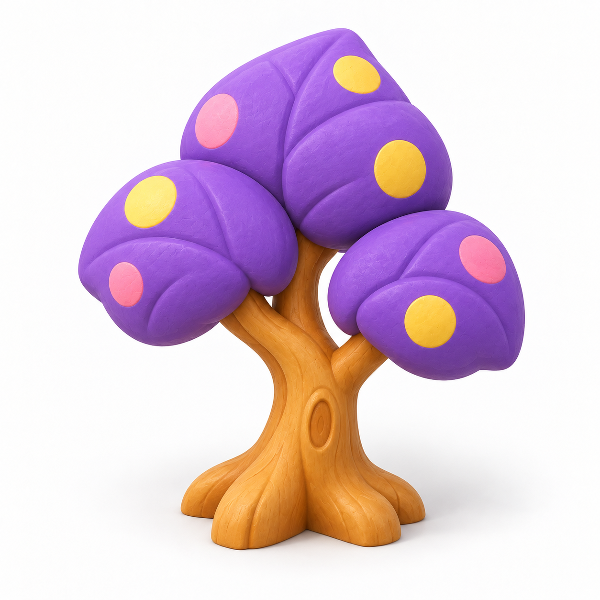
元画像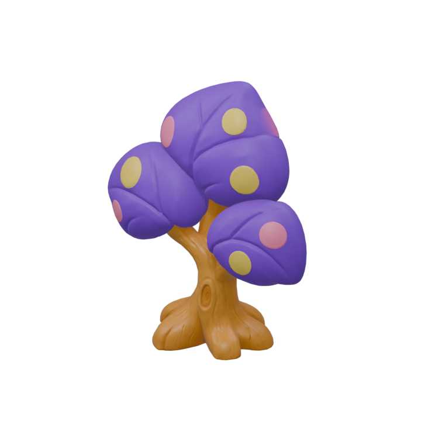
正面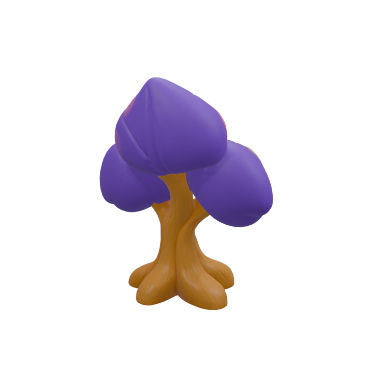
背面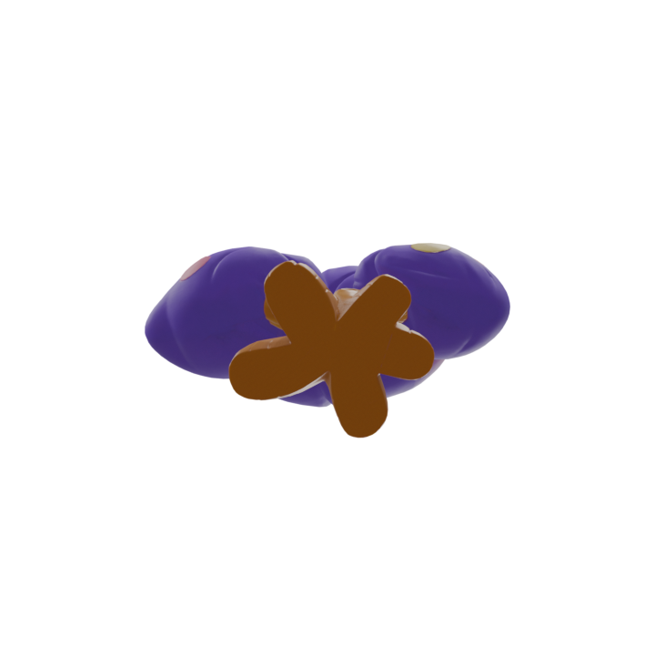
底面紫の葉・水玉・金色の幹を保持。裏面には水玉が補完されず、葉の厚みや枝の奥行きは元画像からの推定。元画像より色と表面の細部は落ち着いている。
最終GLB 未加工GLB 検証記録
苔の岩
4,005 三角形 · 高さ 0.8 m · 9.03 MB · 170.8 秒
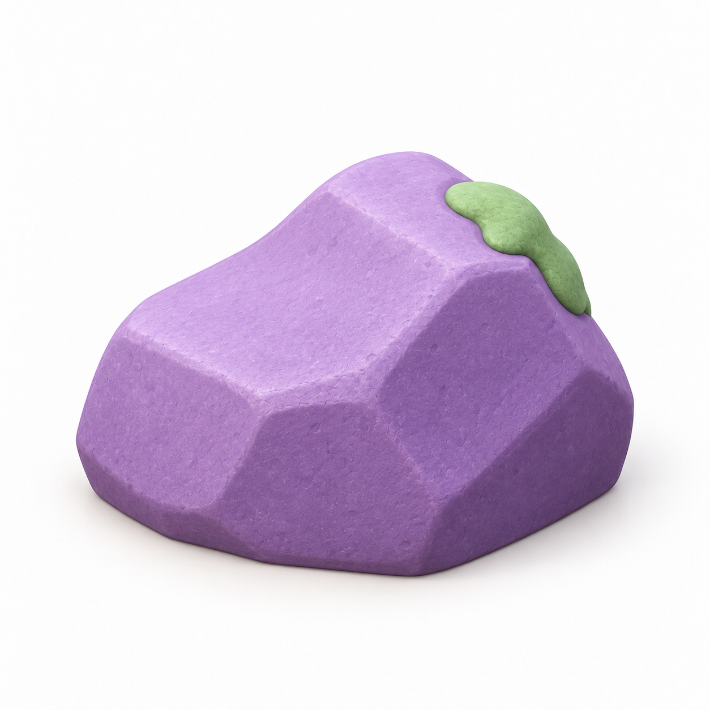
元画像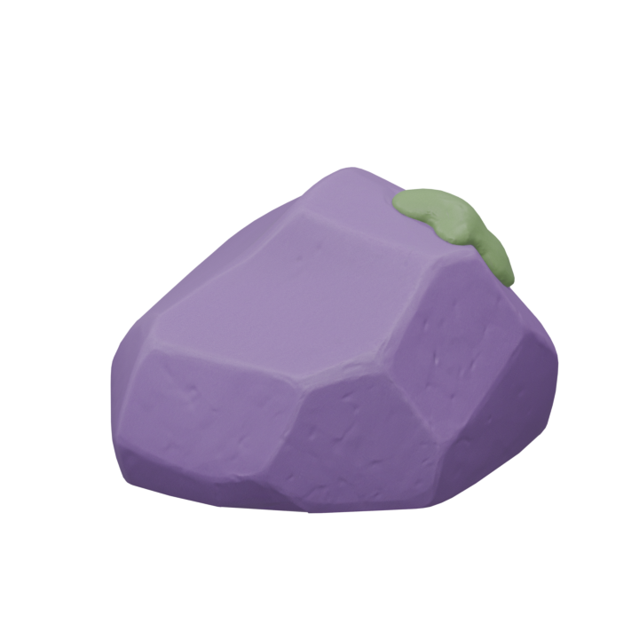
正面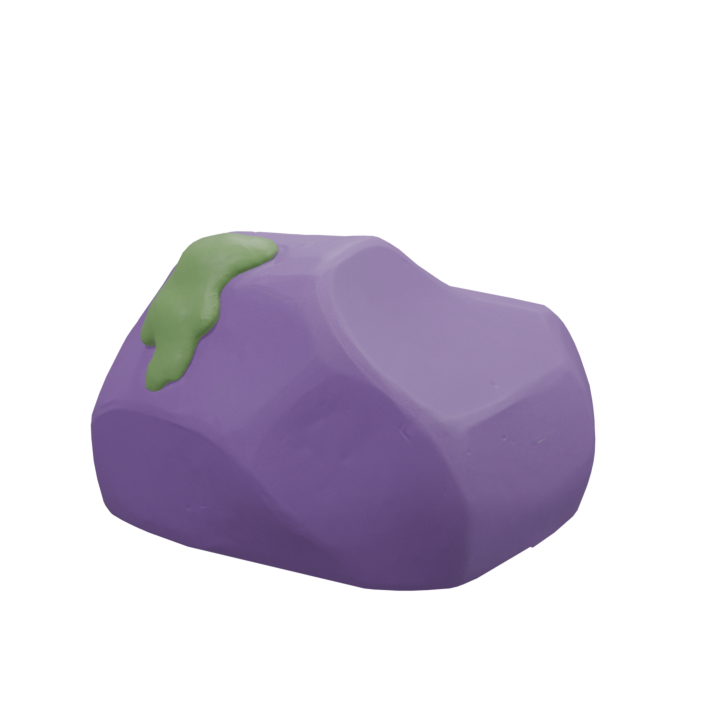
背面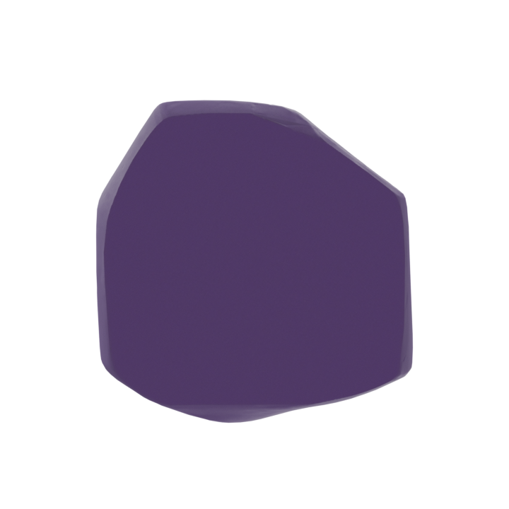
底面紫の石と苔を保持。正面を元画像に近づけるためBlenderで180度回転。元画像より角が丸く、石の微細な質感は簡略化されている。
最終GLB 未加工GLB 検証記録
木のベンチ
7,709 三角形 · 高さ 1 m · 7.78 MB · 172.7 秒
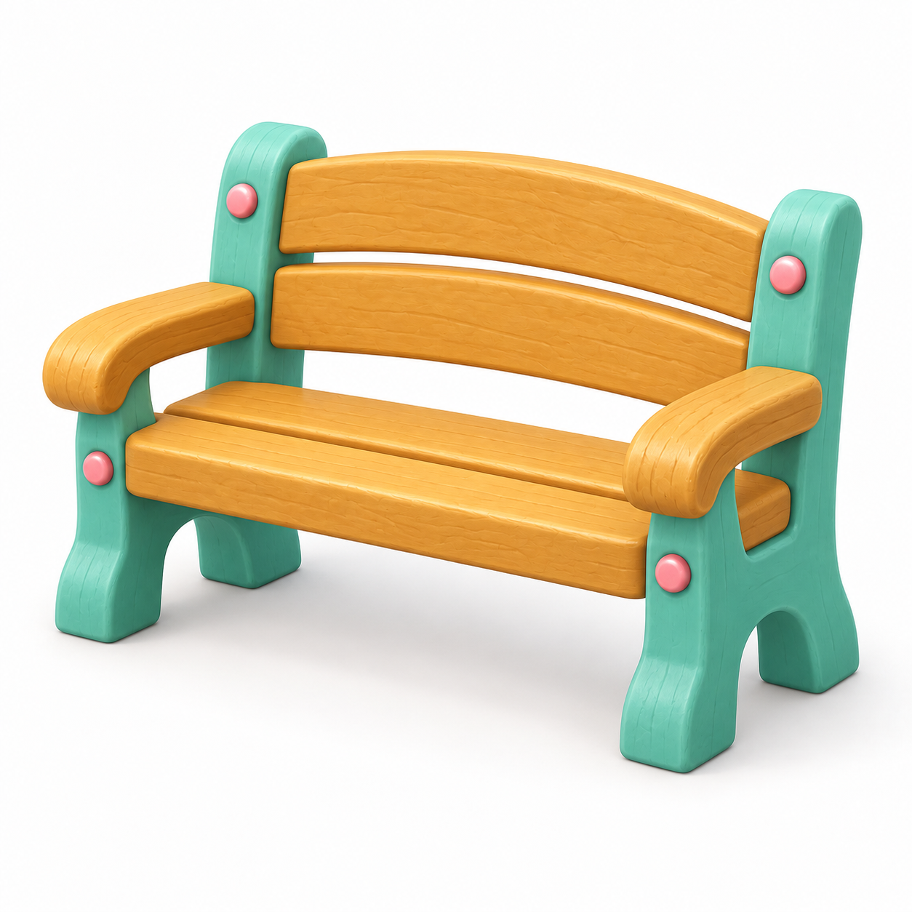
元画像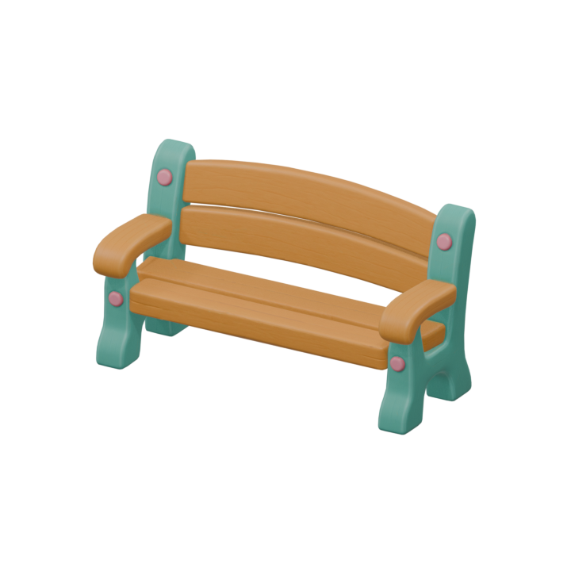
正面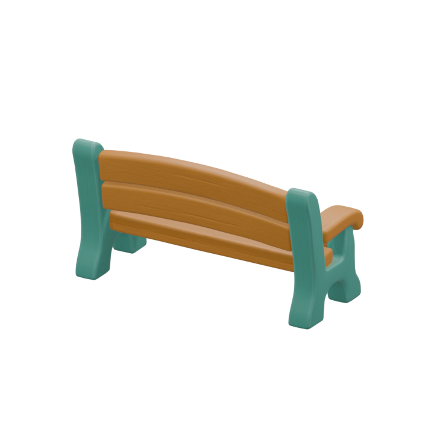
背面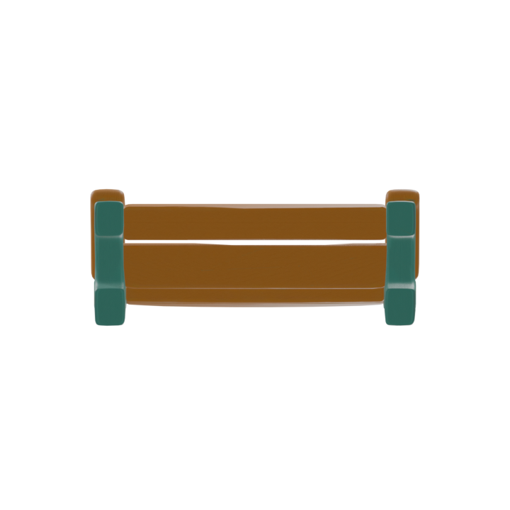
底面木の座面・背板、ミントの脚、ピンクの留め具と板の隙間を保持。元画像より木目は平滑。背面と座面裏は推定形状で、ゲームの座席位置・当たり判定は未設定。
最終GLB 未加工GLB 検証記録